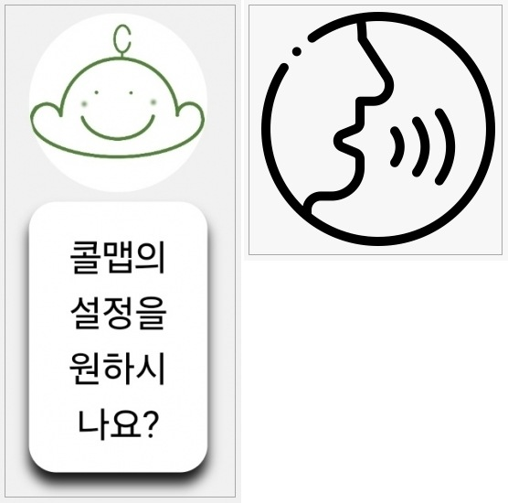

01. 심플하게! 단순하게!

CallMap의 모토이자 근본이라 할 수 있는 개념이라고 생각합니다.
CallMap은 어플의 초기 진입장벽 없이 사용 할수 잇도록 모든 UI를
지관적이고 간편하게 설계 했습니다.
02. 시각과 청각의 활용
현재 위치에서 주변의 시설들을 음성으로 전달하여, 시각적 제한이 있는 사용자들도
주변환경을 쉽게 파악 가능하며,
사용자가 직접 자신의 보이스로 도착지와 기타 서비스를 사용 할수 있습니다.
03. 초행길도 당당히!